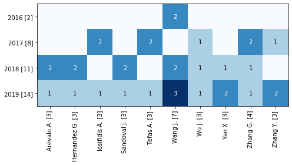
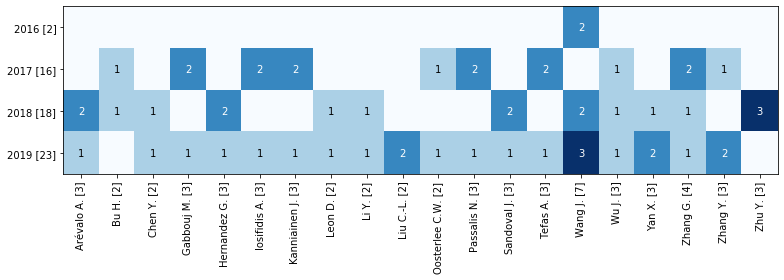

Analysis: Terms by year¶
[1]:
import pandas as pd
from techminer import RecordsDataFrame
rdf = RecordsDataFrame(
pd.read_json(
'step-07.json',
orient='records',
lines=True))
Document type¶
[2]:
rdf.terms_by_year(
column='Document Type')
[2]:
| Document Type | Year | Num Documents | ID | |
|---|---|---|---|---|
| 0 | Article [52] | 2010 [3] | 1 | [[*142*]] |
| 1 | Article [52] | 2011 [2] | 1 | [[*139*]] |
| 2 | Article [52] | 2012 [2] | 1 | [[*137*]] |
| 3 | Article [52] | 2013 [4] | 3 | [[*133*], [*134*], [*135*]] |
| 4 | Article [52] | 2014 [2] | 2 | [[*131*], [*132*]] |
| 5 | Article [52] | 2015 [2] | 1 | [[*130*]] |
| 6 | Article [52] | 2016 [5] | 3 | [[*125*], [*127*], [*128*]] |
| 7 | Article [52] | 2017 [19] | 7 | [[*105*], [*108*], [*111*], [*112*], [*113*], ... |
| 8 | Article [52] | 2018 [52] | 8 | [[*54*], [*58*], [*62*], [*67*], [*68*], [*80*... |
| 9 | Article [52] | 2019 [53] | 25 | [[*0*], [*1*], [*2*], [*3*], [*4*], [*5*], [*6... |
| 10 | Article in Press [2] | 2018 [52] | 2 | [[*92*], [*95*]] |
| 11 | Book Chapter [1] | 2013 [4] | 1 | [[*136*]] |
| 12 | Conference Paper [88] | 2010 [3] | 1 | [[*143*]] |
| 13 | Conference Paper [88] | 2011 [2] | 1 | [[*140*]] |
| 14 | Conference Paper [88] | 2012 [2] | 1 | [[*138*]] |
| 15 | Conference Paper [88] | 2015 [2] | 1 | [[*129*]] |
| 16 | Conference Paper [88] | 2016 [5] | 2 | [[*124*], [*126*]] |
| 17 | Conference Paper [88] | 2017 [19] | 12 | [[*106*], [*107*], [*109*], [*110*], [*114*], ... |
| 18 | Conference Paper [88] | 2018 [52] | 42 | [[*53*], [*55*], [*56*], [*57*], [*59*], [*60*... |
| 19 | Conference Paper [88] | 2019 [53] | 28 | [[*7*], [*8*], [*9*], [*12*], [*13*], [*14*], ... |
| 20 | Conference Review [1] | 2010 [3] | 1 | [[*141*]] |
[3]:
rdf.terms_by_year(
column='Document Type',
sep=None).tomatrix()
[3]:
| 2010 [3] | 2011 [2] | 2012 [2] | 2013 [4] | 2014 [2] | 2015 [2] | 2016 [5] | 2017 [19] | 2018 [52] | 2019 [53] | |
|---|---|---|---|---|---|---|---|---|---|---|
| Article [52] | 1.0 | 1.0 | 1.0 | 3.0 | 2.0 | 1.0 | 3.0 | 7.0 | 8.0 | 25.0 |
| Article in Press [2] | 0.0 | 0.0 | 0.0 | 0.0 | 0.0 | 0.0 | 0.0 | 0.0 | 2.0 | 0.0 |
| Book Chapter [1] | 0.0 | 0.0 | 0.0 | 1.0 | 0.0 | 0.0 | 0.0 | 0.0 | 0.0 | 0.0 |
| Conference Paper [88] | 1.0 | 1.0 | 1.0 | 0.0 | 0.0 | 1.0 | 2.0 | 12.0 | 42.0 | 28.0 |
| Conference Review [1] | 1.0 | 0.0 | 0.0 | 0.0 | 0.0 | 0.0 | 0.0 | 0.0 | 0.0 | 0.0 |
[4]:
rdf.terms_by_year(
column='Document Type').heatmap(figsize=(5,9))

Source title¶
[5]:
rdf.terms_by_year(
column='Source title',
sep=None,
top_n=20)
[5]:
| Source title | Year | Num Documents | ID | |
|---|---|---|---|---|
| 0 | ACM International Conference Pr... [2] | 2018 [22] | 2 | [[*69*], [*75*]] |
| 1 | Advances in Intelligent Systems... [3] | 2019 [27] | 3 | [[*41*], [*51*], [*52*]] |
| 2 | Applied Soft Computing Journal [3] | 2011 [2] | 1 | [[*140*]] |
| 3 | Applied Soft Computing Journal [3] | 2018 [22] | 2 | [[*67*], [*80*]] |
| 4 | Communications in Computer and ... [2] | 2018 [22] | 1 | [[*94*]] |
| 5 | Communications in Computer and ... [2] | 2019 [27] | 1 | [[*30*]] |
| 6 | Expert Systems with Application... [5] | 2011 [2] | 1 | [[*139*]] |
| 7 | Expert Systems with Application... [5] | 2018 [22] | 1 | [[*54*]] |
| 8 | Expert Systems with Application... [5] | 2019 [27] | 3 | [[*0*], [*1*], [*11*]] |
| 9 | IEEE Access [5] | 2019 [27] | 5 | [[*34*], [*38*], [*39*], [*46*], [*47*]] |
| 10 | International Journal of Circui... [2] | 2016 [2] | 1 | [[*127*]] |
| 11 | International Journal of Circui... [2] | 2018 [22] | 1 | [[*103*]] |
| 12 | Journal of Supercomputing [2] | 2013 [1] | 1 | [[*135*]] |
| 13 | Journal of Supercomputing [2] | 2018 [22] | 1 | [[*95*]] |
| 14 | Knowledge-Based Systems [2] | 2019 [27] | 2 | [[*4*], [*25*]] |
| 15 | Lecture Notes in Computer Scien... [17] | 2017 [6] | 4 | [[*119*], [*120*], [*121*], [*122*]] |
| 16 | Lecture Notes in Computer Scien... [17] | 2018 [22] | 9 | [[*88*], [*89*], [*96*], [*97*], [*98*], [*99*... |
| 17 | Lecture Notes in Computer Scien... [17] | 2019 [27] | 4 | [[*36*], [*42*], [*45*], [*49*]] |
| 18 | Neural Computing and Applicatio... [3] | 2019 [27] | 3 | [[*27*], [*37*], [*44*]] |
| 19 | Neurocomputing [2] | 2016 [2] | 1 | [[*125*]] |
| 20 | Neurocomputing [2] | 2019 [27] | 1 | [[*10*]] |
| 21 | Procedia Computer Science [4] | 2018 [22] | 2 | [[*90*], [*91*]] |
| 22 | Procedia Computer Science [4] | 2019 [27] | 2 | [[*40*], [*48*]] |
| 23 | Proceedings - 17th IEEE Interna... [2] | 2019 [27] | 2 | [[*23*], [*24*]] |
| 24 | Proceedings - 2010 6th Internat... [1] | 2010 [1] | 1 | [[*143*]] |
| 25 | Proceedings - 2016 7th Internat... [1] | 2017 [6] | 1 | [[*116*]] |
| 26 | Proceedings - 2017 IEEE 19th Co... [1] | 2017 [6] | 1 | [[*114*]] |
| 27 | Proceedings - 2018 17th Interna... [1] | 2018 [22] | 1 | [[*55*]] |
| 28 | Proceedings - 2018 IEEE 5th Int... [1] | 2019 [27] | 1 | [[*19*]] |
| 29 | Proceedings of the Internationa... [2] | 2018 [22] | 2 | [[*63*], [*64*]] |
[6]:
rdf.terms_by_year(
column='Source title',
sep=None,
top_n=20).tomatrix()
[6]:
| 2010 [1] | 2011 [2] | 2012 [0] | 2013 [1] | 2014 [0] | 2015 [0] | 2016 [2] | 2017 [6] | 2018 [22] | 2019 [27] | |
|---|---|---|---|---|---|---|---|---|---|---|
| ACM International Conference Pr... [2] | 0.0 | 0.0 | 0.0 | 0.0 | 0.0 | 0.0 | 0.0 | 0.0 | 2.0 | 0.0 |
| Advances in Intelligent Systems... [3] | 0.0 | 0.0 | 0.0 | 0.0 | 0.0 | 0.0 | 0.0 | 0.0 | 0.0 | 3.0 |
| Applied Soft Computing Journal [3] | 0.0 | 1.0 | 0.0 | 0.0 | 0.0 | 0.0 | 0.0 | 0.0 | 2.0 | 0.0 |
| Communications in Computer and ... [2] | 0.0 | 0.0 | 0.0 | 0.0 | 0.0 | 0.0 | 0.0 | 0.0 | 1.0 | 1.0 |
| Expert Systems with Application... [5] | 0.0 | 1.0 | 0.0 | 0.0 | 0.0 | 0.0 | 0.0 | 0.0 | 1.0 | 3.0 |
| IEEE Access [5] | 0.0 | 0.0 | 0.0 | 0.0 | 0.0 | 0.0 | 0.0 | 0.0 | 0.0 | 5.0 |
| International Journal of Circui... [2] | 0.0 | 0.0 | 0.0 | 0.0 | 0.0 | 0.0 | 1.0 | 0.0 | 1.0 | 0.0 |
| Journal of Supercomputing [2] | 0.0 | 0.0 | 0.0 | 1.0 | 0.0 | 0.0 | 0.0 | 0.0 | 1.0 | 0.0 |
| Knowledge-Based Systems [2] | 0.0 | 0.0 | 0.0 | 0.0 | 0.0 | 0.0 | 0.0 | 0.0 | 0.0 | 2.0 |
| Lecture Notes in Computer Scien... [17] | 0.0 | 0.0 | 0.0 | 0.0 | 0.0 | 0.0 | 0.0 | 4.0 | 9.0 | 4.0 |
| Neural Computing and Applicatio... [3] | 0.0 | 0.0 | 0.0 | 0.0 | 0.0 | 0.0 | 0.0 | 0.0 | 0.0 | 3.0 |
| Neurocomputing [2] | 0.0 | 0.0 | 0.0 | 0.0 | 0.0 | 0.0 | 1.0 | 0.0 | 0.0 | 1.0 |
| Procedia Computer Science [4] | 0.0 | 0.0 | 0.0 | 0.0 | 0.0 | 0.0 | 0.0 | 0.0 | 2.0 | 2.0 |
| Proceedings - 17th IEEE Interna... [2] | 0.0 | 0.0 | 0.0 | 0.0 | 0.0 | 0.0 | 0.0 | 0.0 | 0.0 | 2.0 |
| Proceedings - 2010 6th Internat... [1] | 1.0 | 0.0 | 0.0 | 0.0 | 0.0 | 0.0 | 0.0 | 0.0 | 0.0 | 0.0 |
| Proceedings - 2016 7th Internat... [1] | 0.0 | 0.0 | 0.0 | 0.0 | 0.0 | 0.0 | 0.0 | 1.0 | 0.0 | 0.0 |
| Proceedings - 2017 IEEE 19th Co... [1] | 0.0 | 0.0 | 0.0 | 0.0 | 0.0 | 0.0 | 0.0 | 1.0 | 0.0 | 0.0 |
| Proceedings - 2018 17th Interna... [1] | 0.0 | 0.0 | 0.0 | 0.0 | 0.0 | 0.0 | 0.0 | 0.0 | 1.0 | 0.0 |
| Proceedings - 2018 IEEE 5th Int... [1] | 0.0 | 0.0 | 0.0 | 0.0 | 0.0 | 0.0 | 0.0 | 0.0 | 0.0 | 1.0 |
| Proceedings of the Internationa... [2] | 0.0 | 0.0 | 0.0 | 0.0 | 0.0 | 0.0 | 0.0 | 0.0 | 2.0 | 0.0 |
[7]:
rdf.terms_by_year(
column='Source title',
sep=None,
top_n=10).heatmap(figsize=(8,9))

[8]:
rdf.terms_by_year(
column='Source title',
sep=',',
top_n=20).heatmap(figsize=(11,8))

[9]:
rdf.terms_by_year(
column='Source title',
sep=',',
top_n=30).heatmap(figsize=(11,6))

Authors¶
[10]:
rdf.terms_by_year(
column='Authors',
sep=',',
top_n=20)
[10]:
| Authors | Year | Num Documents | ID | |
|---|---|---|---|---|
| 0 | Arévalo A. [3] | 2018 [18] | 2 | [[*94*], [*100*]] |
| 1 | Arévalo A. [3] | 2019 [23] | 1 | [[*52*]] |
| 2 | Bu H. [2] | 2017 [16] | 1 | [[*115*]] |
| 3 | Bu H. [2] | 2018 [18] | 1 | [[*66*]] |
| 4 | Chen Y. [2] | 2018 [18] | 1 | [[*66*]] |
| 5 | Chen Y. [2] | 2019 [23] | 1 | [[*46*]] |
| 6 | Gabbouj M. [3] | 2017 [16] | 2 | [[*110*], [*114*]] |
| 7 | Gabbouj M. [3] | 2019 [23] | 1 | [[*8*]] |
| 8 | Hernandez G. [3] | 2018 [18] | 2 | [[*94*], [*100*]] |
| 9 | Hernandez G. [3] | 2019 [23] | 1 | [[*52*]] |
| 10 | Iosifidis A. [3] | 2017 [16] | 2 | [[*110*], [*114*]] |
| 11 | Iosifidis A. [3] | 2019 [23] | 1 | [[*8*]] |
| 12 | Kanniainen J. [3] | 2017 [16] | 2 | [[*110*], [*114*]] |
| 13 | Kanniainen J. [3] | 2019 [23] | 1 | [[*8*]] |
| 14 | Leon D. [2] | 2018 [18] | 1 | [[*94*]] |
| 15 | Leon D. [2] | 2019 [23] | 1 | [[*52*]] |
| 16 | Li Y. [2] | 2018 [18] | 1 | [[*97*]] |
| 17 | Li Y. [2] | 2019 [23] | 1 | [[*40*]] |
| 18 | Liu C.-L. [2] | 2019 [23] | 2 | [[*19*], [*42*]] |
| 19 | Oosterlee C.W. [2] | 2017 [16] | 1 | [[*120*]] |
| 20 | Oosterlee C.W. [2] | 2019 [23] | 1 | [[*18*]] |
| 21 | Passalis N. [3] | 2017 [16] | 2 | [[*110*], [*114*]] |
| 22 | Passalis N. [3] | 2019 [23] | 1 | [[*8*]] |
| 23 | Sandoval J. [3] | 2018 [18] | 2 | [[*94*], [*100*]] |
| 24 | Sandoval J. [3] | 2019 [23] | 1 | [[*52*]] |
| 25 | Tefas A. [3] | 2017 [16] | 2 | [[*110*], [*114*]] |
| 26 | Tefas A. [3] | 2019 [23] | 1 | [[*8*]] |
| 27 | Wang J. [7] | 2016 [2] | 2 | [[*128*], [*128*]] |
| 28 | Wang J. [7] | 2018 [18] | 2 | [[*80*], [*87*]] |
| 29 | Wang J. [7] | 2019 [23] | 3 | [[*3*], [*10*], [*15*]] |
| 30 | Wu J. [3] | 2017 [16] | 1 | [[*115*]] |
| 31 | Wu J. [3] | 2018 [18] | 1 | [[*66*]] |
| 32 | Wu J. [3] | 2019 [23] | 1 | [[*34*]] |
| 33 | Yan X. [3] | 2018 [18] | 1 | [[*85*]] |
| 34 | Yan X. [3] | 2019 [23] | 2 | [[*13*], [*44*]] |
| 35 | Zhang G. [4] | 2017 [16] | 2 | [[*117*], [*119*]] |
| 36 | Zhang G. [4] | 2018 [18] | 1 | [[*78*]] |
| 37 | Zhang G. [4] | 2019 [23] | 1 | [[*27*]] |
| 38 | Zhang Y. [3] | 2017 [16] | 1 | [[*109*]] |
| 39 | Zhang Y. [3] | 2019 [23] | 2 | [[*4*], [*6*]] |
| 40 | Zhu Y. [3] | 2018 [18] | 3 | [[*78*], [*88*], [*89*]] |
[11]:
rdf.terms_by_year(
column='Authors',
sep=',',
top_n=20).tomatrix()
[11]:
| 2016 [2] | 2017 [16] | 2018 [18] | 2019 [23] | |
|---|---|---|---|---|
| Arévalo A. [3] | 0.0 | 0.0 | 2.0 | 1.0 |
| Bu H. [2] | 0.0 | 1.0 | 1.0 | 0.0 |
| Chen Y. [2] | 0.0 | 0.0 | 1.0 | 1.0 |
| Gabbouj M. [3] | 0.0 | 2.0 | 0.0 | 1.0 |
| Hernandez G. [3] | 0.0 | 0.0 | 2.0 | 1.0 |
| Iosifidis A. [3] | 0.0 | 2.0 | 0.0 | 1.0 |
| Kanniainen J. [3] | 0.0 | 2.0 | 0.0 | 1.0 |
| Leon D. [2] | 0.0 | 0.0 | 1.0 | 1.0 |
| Li Y. [2] | 0.0 | 0.0 | 1.0 | 1.0 |
| Liu C.-L. [2] | 0.0 | 0.0 | 0.0 | 2.0 |
| Oosterlee C.W. [2] | 0.0 | 1.0 | 0.0 | 1.0 |
| Passalis N. [3] | 0.0 | 2.0 | 0.0 | 1.0 |
| Sandoval J. [3] | 0.0 | 0.0 | 2.0 | 1.0 |
| Tefas A. [3] | 0.0 | 2.0 | 0.0 | 1.0 |
| Wang J. [7] | 2.0 | 0.0 | 2.0 | 3.0 |
| Wu J. [3] | 0.0 | 1.0 | 1.0 | 1.0 |
| Yan X. [3] | 0.0 | 0.0 | 1.0 | 2.0 |
| Zhang G. [4] | 0.0 | 2.0 | 1.0 | 1.0 |
| Zhang Y. [3] | 0.0 | 1.0 | 0.0 | 2.0 |
| Zhu Y. [3] | 0.0 | 0.0 | 3.0 | 0.0 |
[12]:
rdf.terms_by_year(
column='Authors',
sep=',',
top_n=10).heatmap(figsize=(7,4))

[13]:
rdf.terms_by_year(
column='Authors',
sep=',',
top_n=20).heatmap(figsize=(11,4))

[14]:
rdf.terms_by_year(
column='Authors',
sep=',',
top_n=30).heatmap(figsize=(10,5))

Keywords¶
[15]:
rdf.terms_by_year(
column='keywords (cleaned)',
sep=';',
top_n=20)
[15]:
| keywords (cleaned) | Year | Num Documents | ID | |
|---|---|---|---|---|
| 0 | Financial markets [68] | 2013 [20] | 1 | [[*133*]] |
| 1 | Financial markets [68] | 2014 [13] | 2 | [[*131*], [*132*]] |
| 2 | Financial markets [68] | 2015 [12] | 1 | [[*130*]] |
| 3 | Financial markets [68] | 2016 [42] | 3 | [[*124*], [*125*], [*128*]] |
| 4 | Financial markets [68] | 2017 [144] | 11 | [[*105*], [*106*], [*107*], [*108*], [*110*], ... |
| 5 | Financial markets [68] | 2018 [359] | 29 | [[*53*], [*56*], [*58*], [*60*], [*61*], [*62*... |
| 6 | Financial markets [68] | 2019 [331] | 21 | [[*3*], [*4*], [*6*], [*7*], [*9*], [*11*], [*... |
| 7 | artificial neural networks [62] | 2010 [20] | 3 | [[*141*], [*142*], [*143*]] |
| 8 | artificial neural networks [62] | 2011 [15] | 2 | [[*139*], [*140*]] |
| 9 | artificial neural networks [62] | 2012 [14] | 2 | [[*137*], [*138*]] |
| 10 | artificial neural networks [62] | 2013 [20] | 1 | [[*136*]] |
| 11 | artificial neural networks [62] | 2014 [13] | 1 | [[*132*]] |
| 12 | artificial neural networks [62] | 2016 [42] | 1 | [[*125*]] |
| 13 | artificial neural networks [62] | 2017 [144] | 9 | [[*107*], [*108*], [*110*], [*111*], [*113*], ... |
| 14 | artificial neural networks [62] | 2018 [359] | 22 | [[*53*], [*54*], [*55*], [*58*], [*63*], [*64*... |
| 15 | artificial neural networks [62] | 2019 [331] | 21 | [[*4*], [*6*], [*9*], [*10*], [*12*], [*14*], ... |
| 16 | commerce [61] | 2010 [20] | 1 | [[*141*]] |
| 17 | commerce [61] | 2011 [15] | 2 | [[*139*], [*140*]] |
| 18 | commerce [61] | 2013 [20] | 1 | [[*133*]] |
| 19 | commerce [61] | 2014 [13] | 1 | [[*131*]] |
| 20 | commerce [61] | 2015 [12] | 1 | [[*130*]] |
| 21 | commerce [61] | 2017 [144] | 9 | [[*105*], [*106*], [*107*], [*108*], [*110*], ... |
| 22 | commerce [61] | 2018 [359] | 27 | [[*53*], [*54*], [*55*], [*56*], [*57*], [*61*... |
| 23 | commerce [61] | 2019 [331] | 19 | [[*3*], [*4*], [*6*], [*7*], [*9*], [*19*], [*... |
| 24 | convolution [21] | 2012 [14] | 1 | [[*137*]] |
| 25 | convolution [21] | 2014 [13] | 1 | [[*132*]] |
| 26 | convolution [21] | 2016 [42] | 1 | [[*128*]] |
| 27 | convolution [21] | 2017 [144] | 4 | [[*107*], [*114*], [*118*], [*123*]] |
| 28 | convolution [21] | 2018 [359] | 9 | [[*64*], [*66*], [*77*], [*78*], [*79*], [*91*... |
| 29 | convolution [21] | 2019 [331] | 5 | [[*14*], [*18*], [*19*], [*26*], [*45*]] |
| ... | ... | ... | ... | ... |
| 115 | recurrent neural networks [52] | 2018 [359] | 17 | [[*53*], [*56*], [*59*], [*60*], [*62*], [*68*... |
| 116 | recurrent neural networks [52] | 2019 [331] | 20 | [[*2*], [*6*], [*8*], [*9*], [*11*], [*12*], [... |
| 117 | stock forecasting [34] | 2012 [14] | 1 | [[*137*]] |
| 118 | stock forecasting [34] | 2016 [42] | 3 | [[*124*], [*125*], [*128*]] |
| 119 | stock forecasting [34] | 2017 [144] | 6 | [[*107*], [*112*], [*113*], [*118*], [*121*], ... |
| 120 | stock forecasting [34] | 2018 [359] | 11 | [[*56*], [*61*], [*66*], [*74*], [*76*], [*78*... |
| 121 | stock forecasting [34] | 2019 [331] | 13 | [[*3*], [*4*], [*11*], [*12*], [*18*], [*20*],... |
| 122 | time series [91] | 2010 [20] | 2 | [[*142*], [*143*]] |
| 123 | time series [91] | 2012 [14] | 2 | [[*137*], [*138*]] |
| 124 | time series [91] | 2013 [20] | 3 | [[*133*], [*135*], [*136*]] |
| 125 | time series [91] | 2015 [12] | 1 | [[*129*]] |
| 126 | time series [91] | 2016 [42] | 3 | [[*124*], [*126*], [*127*]] |
| 127 | time series [91] | 2017 [144] | 11 | [[*105*], [*106*], [*109*], [*110*], [*111*], ... |
| 128 | time series [91] | 2018 [359] | 35 | [[*54*], [*55*], [*56*], [*57*], [*58*], [*59*... |
| 129 | time series [91] | 2019 [331] | 34 | [[*3*], [*6*], [*7*], [*8*], [*9*], [*11*], [*... |
| 130 | time series forecasting [43] | 2010 [20] | 2 | [[*142*], [*143*]] |
| 131 | time series forecasting [43] | 2012 [14] | 1 | [[*138*]] |
| 132 | time series forecasting [43] | 2015 [12] | 1 | [[*129*]] |
| 133 | time series forecasting [43] | 2016 [42] | 3 | [[*124*], [*126*], [*127*]] |
| 134 | time series forecasting [43] | 2017 [144] | 4 | [[*106*], [*111*], [*116*], [*117*]] |
| 135 | time series forecasting [43] | 2018 [359] | 14 | [[*53*], [*55*], [*64*], [*80*], [*81*], [*82*... |
| 136 | time series forecasting [43] | 2019 [331] | 18 | [[*0*], [*1*], [*4*], [*6*], [*8*], [*11*], [*... |
| 137 | trading [65] | 2010 [20] | 1 | [[*142*]] |
| 138 | trading [65] | 2011 [15] | 1 | [[*139*]] |
| 139 | trading [65] | 2013 [20] | 1 | [[*134*]] |
| 140 | trading [65] | 2014 [13] | 1 | [[*132*]] |
| 141 | trading [65] | 2016 [42] | 1 | [[*125*]] |
| 142 | trading [65] | 2017 [144] | 11 | [[*105*], [*107*], [*108*], [*110*], [*111*], ... |
| 143 | trading [65] | 2018 [359] | 27 | [[*53*], [*55*], [*56*], [*64*], [*66*], [*67*... |
| 144 | trading [65] | 2019 [331] | 22 | [[*3*], [*4*], [*6*], [*9*], [*11*], [*12*], [... |
145 rows × 4 columns
[16]:
rdf.terms_by_year(
column='keywords (cleaned)',
sep=';',
top_n=30).tomatrix()
[16]:
| 2010 [24] | 2011 [17] | 2012 [16] | 2013 [22] | 2014 [15] | 2015 [14] | 2016 [48] | 2017 [166] | 2018 [416] | 2019 [388] | |
|---|---|---|---|---|---|---|---|---|---|---|
| Big data [12] | 0.0 | 0.0 | 0.0 | 0.0 | 0.0 | 0.0 | 1.0 | 2.0 | 5.0 | 4.0 |
| Brain [15] | 0.0 | 0.0 | 0.0 | 0.0 | 0.0 | 0.0 | 1.0 | 3.0 | 8.0 | 3.0 |
| Financial markets [68] | 0.0 | 0.0 | 0.0 | 1.0 | 2.0 | 1.0 | 3.0 | 11.0 | 29.0 | 21.0 |
| Learning algorithms [19] | 0.0 | 0.0 | 0.0 | 0.0 | 0.0 | 0.0 | 1.0 | 1.0 | 9.0 | 8.0 |
| Learning systems [18] | 0.0 | 0.0 | 0.0 | 0.0 | 0.0 | 0.0 | 0.0 | 3.0 | 8.0 | 7.0 |
| algorithms [14] | 2.0 | 1.0 | 1.0 | 0.0 | 0.0 | 1.0 | 0.0 | 2.0 | 0.0 | 7.0 |
| artificial neural networks [62] | 3.0 | 2.0 | 2.0 | 1.0 | 1.0 | 0.0 | 1.0 | 9.0 | 22.0 | 21.0 |
| commerce [61] | 1.0 | 2.0 | 0.0 | 1.0 | 1.0 | 1.0 | 0.0 | 9.0 | 27.0 | 19.0 |
| convolution [21] | 0.0 | 0.0 | 1.0 | 0.0 | 1.0 | 0.0 | 1.0 | 4.0 | 9.0 | 5.0 |
| convolutional neural network [29] | 0.0 | 0.0 | 1.0 | 1.0 | 1.0 | 0.0 | 1.0 | 5.0 | 11.0 | 9.0 |
| costs [21] | 0.0 | 0.0 | 0.0 | 1.0 | 0.0 | 0.0 | 2.0 | 4.0 | 9.0 | 5.0 |
| deep learning [76] | 2.0 | 2.0 | 0.0 | 1.0 | 1.0 | 1.0 | 3.0 | 7.0 | 33.0 | 26.0 |
| feedforward neural networks [24] | 1.0 | 0.0 | 0.0 | 0.0 | 0.0 | 0.0 | 1.0 | 7.0 | 7.0 | 8.0 |
| finance [35] | 1.0 | 2.0 | 0.0 | 1.0 | 0.0 | 1.0 | 2.0 | 6.0 | 12.0 | 10.0 |
| financial data [31] | 0.0 | 0.0 | 1.0 | 0.0 | 0.0 | 1.0 | 2.0 | 6.0 | 8.0 | 13.0 |
| financial time series [38] | 2.0 | 0.0 | 1.0 | 1.0 | 0.0 | 0.0 | 1.0 | 9.0 | 13.0 | 11.0 |
| financial time series forecasti... [19] | 2.0 | 0.0 | 0.0 | 0.0 | 0.0 | 0.0 | 1.0 | 4.0 | 2.0 | 10.0 |
| forecasting [108] | 1.0 | 2.0 | 2.0 | 4.0 | 2.0 | 2.0 | 5.0 | 15.0 | 36.0 | 39.0 |
| forecasting accuracy [22] | 0.0 | 0.0 | 0.0 | 1.0 | 1.0 | 1.0 | 4.0 | 3.0 | 7.0 | 5.0 |
| forecasting models [16] | 0.0 | 0.0 | 0.0 | 0.0 | 0.0 | 0.0 | 1.0 | 1.0 | 11.0 | 3.0 |
| investments [18] | 0.0 | 0.0 | 0.0 | 1.0 | 0.0 | 1.0 | 0.0 | 4.0 | 7.0 | 5.0 |
| long short-term memory neural n... [54] | 0.0 | 0.0 | 1.0 | 2.0 | 0.0 | 1.0 | 2.0 | 9.0 | 21.0 | 18.0 |
| machine learning [35] | 2.0 | 2.0 | 0.0 | 0.0 | 0.0 | 1.0 | 1.0 | 4.0 | 11.0 | 14.0 |
| mean square error [13] | 0.0 | 0.0 | 0.0 | 1.0 | 2.0 | 0.0 | 1.0 | 2.0 | 1.0 | 6.0 |
| recurrent neural networks [52] | 2.0 | 2.0 | 1.0 | 1.0 | 2.0 | 0.0 | 3.0 | 4.0 | 17.0 | 20.0 |
| stock forecasting [34] | 0.0 | 0.0 | 1.0 | 0.0 | 0.0 | 0.0 | 3.0 | 6.0 | 11.0 | 13.0 |
| stock markets [12] | 0.0 | 1.0 | 1.0 | 0.0 | 0.0 | 0.0 | 0.0 | 0.0 | 6.0 | 4.0 |
| time series [91] | 2.0 | 0.0 | 2.0 | 3.0 | 0.0 | 1.0 | 3.0 | 11.0 | 35.0 | 34.0 |
| time series forecasting [43] | 2.0 | 0.0 | 1.0 | 0.0 | 0.0 | 1.0 | 3.0 | 4.0 | 14.0 | 18.0 |
| trading [65] | 1.0 | 1.0 | 0.0 | 1.0 | 1.0 | 0.0 | 1.0 | 11.0 | 27.0 | 22.0 |
[17]:
rdf.terms_by_year(
column='keywords (cleaned)',
sep=';',
top_n=10).heatmap(figsize=(7,8))

[18]:
rdf.terms_by_year(
column='keywords (cleaned)',
sep=';',
top_n=20).heatmap(figsize=(9,8))

[19]:
rdf.terms_by_year(
column='keywords (cleaned)',
sep=';',
top_n=30).heatmap(figsize=(12,7))